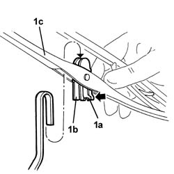

5040B28 windscreen wiper blade/s - r+r
- Path
- Procedures > 50 auxiliary units > 5040 AIR CONDITIONING CASING AND COMPONENTS > 5040B SAFETY SYSTEM CHECK DEVICES > 5040B28 windscreen wiper blade/s - r+r
- Kind
- repair procedure (removal / refitting; the operation number is the code)
- Applies to
- all engines; all production periods
- Interactive page
- https://sloeber94.github.io/elrnDB-lThss/en/#/225644
Applies to: all engines; all production periods
 Removing
Removing
 Refitting
Refitting- Open the bonnet lid.
- Lift up the wiper arm.
1. Press the end with the retainer (1a) for the support (1b) and remove the blade (1c) from the end of the arm.

Applies to: all engines; all production periods
Refitting
Removing- Check that the blade is not damaged and that the rubber is intact.
- Fit the support on the end of the arm and engage the retainer.
- Lower the wiper arm.
- Close the bonnet lid.
- Check that the windscreen wiper is working properly.